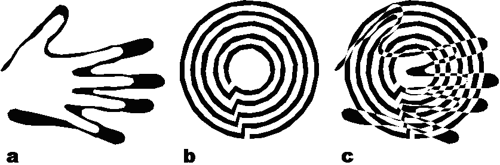
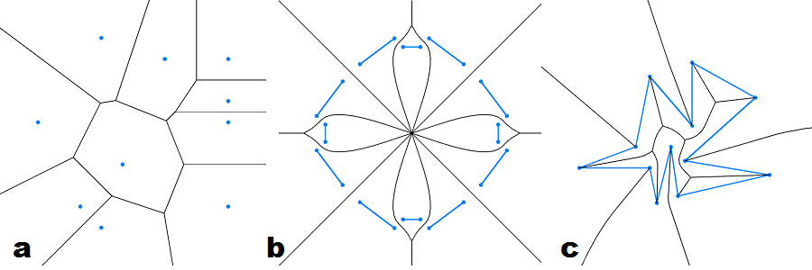
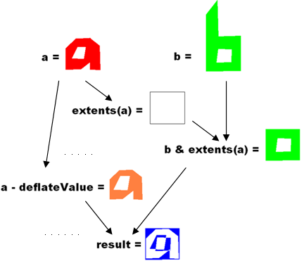

目录
- Boost.Polygon 主页
- 设计概述
- 各向同性
- 坐标概念
- 区间概念
- 点概念
- Segment 概念
- 矩形概念
- Polygon 90 概念
- 带孔 Polygon 90 概念
- Polygon 45 概念
- 带孔 Polygon 45 概念
- 多边形概念
- 带孔多边形概念
- Polygon 90 集合概念
- Polygon 45 集合概念
- 多边形集合概念
- 90 度连通性提取
- 45 度连通性提取
- 连通性提取
- 90 度属性合并
- 45 度属性合并
- 属性合并
- Voronoi 主页
- Voronoi 基准测试
- Voronoi 构建器
- Voronoi 图
其他资源
Polygon 赞助者

BOOST.POLYGON 库
Boost.Polygon 库提供专注于操作平面多边形几何数据的算法. 具体提供的算法包括多边形集合运算 (交集、并集、差集、不交并) 以及相关算法, 如多边形连通性图提取、偏移和地图叠加. 图 a 与图 b 的不交并 (XOR) 的例子如下面的图 c 所示. 这些所谓的布尔算法在 GIS (地理空间信息系统)、VLSI CAD 以及 CAD 的所有其他领域和更多应用领域中都有重要意义, 提供这些算法是本库的首要关注点. Boost.Polygon 库并不打算把计算几何的全部内容都纳入其范围, 而是提供一组处理坐标、点、区间和矩形的能力, 这些是支持实现多边形数据结构与算法以及与之交互所必需的.

本库的一项重要特性是实现了通用的扫描线算法, 用于构造二维空间中点与线段的 Voronoi 图 (作为 GSoC 2010 计划的一部分开发). Voronoi 图数据结构可应用于图像分割、光学字符识别、最近邻查询的执行. 它与其他计算几何概念密切相关: Delaunay 三角剖分、中轴、直骨架、最大空圆. Boost.Polygon 库提供了构造点的 Voronoi 图 (图 a) 与线段的 Voronoi 图 (图 b, 后者可用于离散化任何二维曲线) 的接口. 图 c 是非凸多边形中轴的示例. 该实现在效率和数值稳健性两方面都优于大多数已知的商业与非商业库. 关于该主题的更多细节请参见 Voronoi 主页.

坐标数据类型是库提供的所有数据类型与算法的模板参数, 应为整数类型. 库中实现的算法不支持浮点坐标数据类型, 因为要实现浮点稳健性意味着采用另一套算法, 而且通常要对浮点表示做平台特定的假设. 关于本库及其实现的更多详细讨论, 包括与其他开源替代方案的基准测试比较, 请参阅 论文 与 演示文稿, 二者来自 boostcon 2009, 另有对本库核心算法运行期复杂度的详细分析.
多边形库背后的设计理念是创建一个 API, 用于在用户几何数据类型上调用库提供的算法, 这个 API 要尽可能直观、尽可能不易出错, 并易于集成到既有应用中. 基于 C++ 概念机制的模板元编程与泛型运算符重载相结合, 在不牺牲底层算法运行期或内存效率的前提下实现了这些设计目标. 该 API 旨在展示基于 C++ 概念机制的库接口可以轻松实现什么, 但其实现基于当前语言特性. 得益于这个 API, 下面这段操作非库几何类型的代码片段成为可能:
在上面的代码片段中, 假想的多边形类型 CPolygon 已被映射到库的多边形概念, 并与库 API 一起使用: 以多边形列表 a 的包围盒裁剪多边形列表 b, 再将结果与收缩了某个整数量的多边形列表 a 做不交并. 最终结果通过并集运算累加到一个多边形列表中. 描述这种 API 用法所敲的字比写代码本身还多, 而且描述并不比代码本身更清晰. 一图胜千言.

在 Boost.Polygon 中, 诸如此处所示的运算要么是按其功能命名的自由函数, 要么是 C++ 运算符的重载, 便于通过阅读代码推断其行为. 运算符包含在命名空间 boost::polygon::operators 中, 因此可以在 boost::polygon 命名空间之外使用它们, 而不必引入整个 boost::polygon 命名空间. 遵循最小惊讶原则, 推断出的行为通常应与实际行为一致. 诸如参数顺序 (输出参数在前) 以及在不同函数之间一致地应用相同语义 (累加) 之类的约定, 既降低了新用户的学习曲线, 也减少了高级用户记忆众多不同函数的语义与参数顺序的需要.
尽管实现这个 API 的库内部代码由于大量使用模板元编程而通常复杂且难解, 但在用户代码中应用库 API 通常简单明了, 因为它没有任何多余的语法. 唯一的例外是把用户类型映射到库概念, 这要求用户进行一些简单的模板编程, 并了解库概念类型系统工作方式的某些内部细节. 下面的示例应该有助于用户完成这些编程任务.
- 示例文件:
- point_usage.cpp 使用库提供的点数据类型与函数
- custom_point.cpp 将用户自定义的点类映射到库的 point_concept
- polygon_usage.cpp 使用库提供的多边形数据类型与函数
- custom_polygon.cpp 将用户自定义的多边形类映射到库的 polygon_concept
- polygon_set_usage.cpp 使用库提供的多边形集合数据类型与函数
- custom_polygon_set.cpp 将用户自定义的类映射到库的 polygon_set_concept
- connectivity_extraction_usage.cpp 使用连通性提取算法在多边形上构建连通性图
- property_merge_usage.cpp 对多边形数据使用 n 层地图叠加算法
- 教程:
- 版图与原理图比对 学习如何应用 Boost.Polygon 能力实现一个简化的电路提取应用
- Minkowski 和 学习如何应用 Boost.Polygon 能力实现多边形集合的 Minkowski 和
- Voronoi 基础教程 学习如何构造、遍历、可视化 Voronoi 图并与数据关联, 而无需深入库的细节.
- Voronoi 进阶教程 学习如何用用户提供的坐标类型配置 Voronoi 构建器与 Voronoi 图数据结构.
我们感谢: Thomas Klimpel、Frank Mori Hess、Barend Gehrels、Andreas Fabri、Jeffrey Hellrung、Tim Keitt、Markus Werle、Paul A. Bristow、Robert Stewart、Mathias Gaunard、Michael Fawcett、Steven Watanabe、Joachim Faulhaber、John Bytheway、Sebastian Redl、Mika Heiskanen、John Phillips、Kai Benndorf、Hartmut Kaiser、Arash Partow、Maurizio Vitale、Brandon Kohn、David Abrahams、Gordon Woodhull、Daniel James、John Maddock、Tom Brinkman、Bo Persson、Mateusz Loskot、Christian Henning、Jean-Sebastien Stoezel, 感谢他们在 boost 提交流程中为库提供反馈和/或正式评审, 同时感谢 Fernando Cacciola 慷慨担任评审经理.
| 版权: | 版权所有 © Intel Corporation 2008-2010. |
|---|---|
| License: | 按 Boost 软件许可 1.0 版 (Boost Software License, Version 1.0) 分发. (随附文件 LICENSE_1_0.txt 或复制于 http://www.boost.org/LICENSE_1_0.txt) |